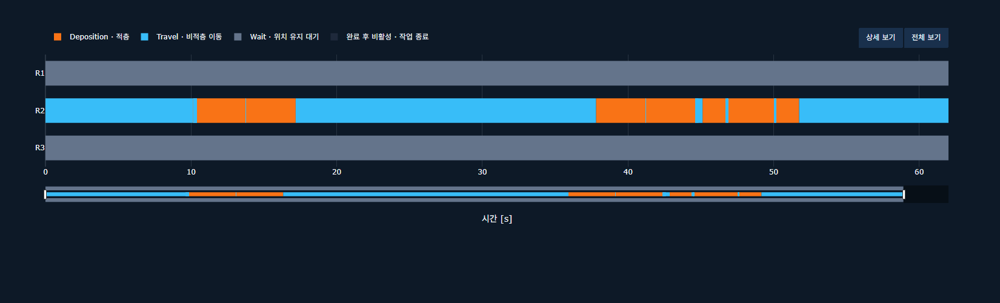
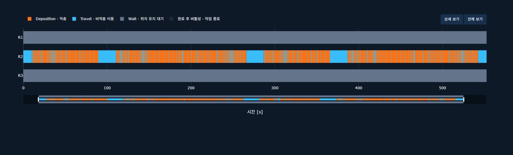
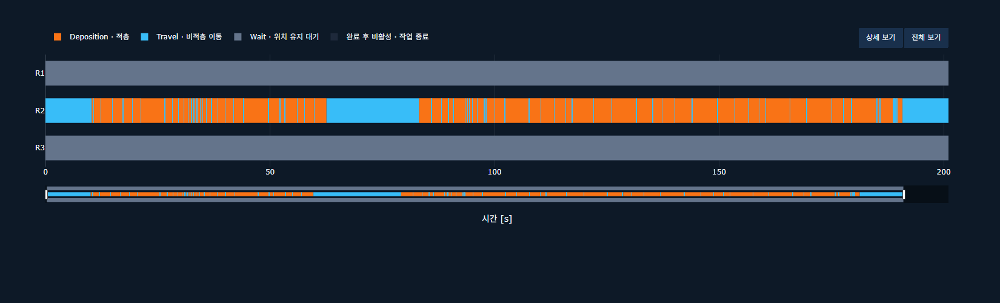
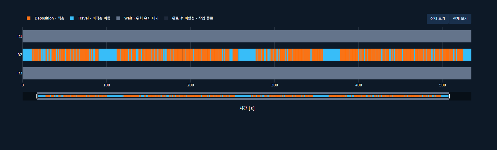
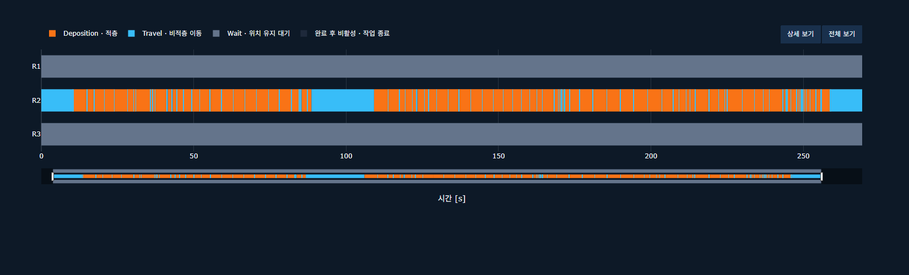
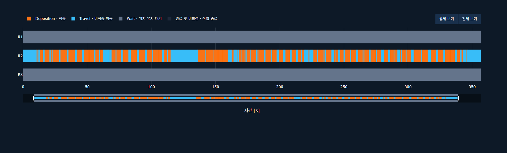
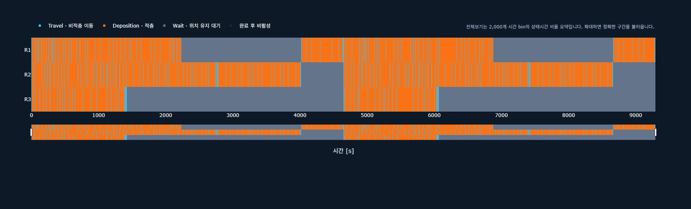
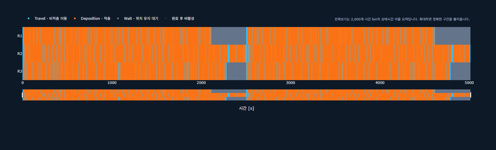

00:00:01:02 | Validator PASS

Interactive Validator Gantt Trajectory Validator JSON
00:00:09:13 | Validator PASS

Interactive Validator Gantt Trajectory Validator JSON
00:00:03:21 | Validator PASS

Interactive Validator Gantt Trajectory Validator JSON
00:00:08:54 | Validator PASS

Interactive Validator Gantt Trajectory Validator JSON
00:00:04:29 | Validator PASS

Interactive Validator Gantt Trajectory Validator JSON
00:00:05:57 | Validator PASS

Interactive Validator Gantt Trajectory Validator JSON
00:02:34:54 | Validator PASS

Interactive Validator Gantt Trajectory Validator JSON
00:01:23:34 | Validator PASS
